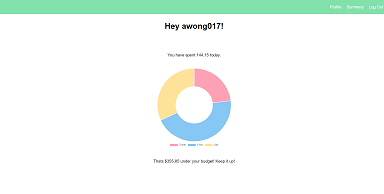
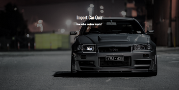

I found my passion for coding while working as an Industrial Engineering Technician after acquiring my Mechanical Engineering degree. The task that I enjoyed doing the most was basic C# programming in an ERP software and debugging what were known as product configurators. After talking to many of my developers friends, I learned that my task was similar to those of a developer, but on a more elementary level. From then on I decided to make a career change and enter the Engineering Flex Web Development program at Thinkful. As a person that takes pleasure in seeing physical progress, web development brings me a tremendous amount joy when I look upon the finish product.
When I'm not hacking away on my keyboard, one of my favorite hobbies are automotive modification and maintenance. There's nothing like fine tuning the suspension of a car and going out for a spirited drive. I am also very passionate about sight seeing and world traveling. Being immersed in a variety of cultures is truly a unique and satisfying experience.
Xpense
Xpense was the first full stack project that I completed for my Engineering Flex program. The ultimate goal was to use both front end and back end aspects of web development. With using React on the front end, express for the server, and postgresql to manage a relational database, this was a true full stack project. Xpense allows the user to manage his or her daily expenses. With an expense summary view with many filters, users are able stay within their specified budget and are able to keep track of their purchases with ease. Effortlessly sign up and see for yourself!
Live Line
This was my second project during my Engineering Flex program. The main purpose of the project was to practice working with APIs, extracting data from those APIs, and formatting the data in a aesthetic manner through the creation of a music application. This application allows users to search their favorite music artists, which gives the user the ability to read artist's bios, listen to their top music tracks, and see artists upcoming shows and events. Give it a try! Who knows, you just might end up buying tickets to a show by your favorite artist!
Import Car Quiz
This was my first project during my Engineering Flex program. The main purpose of the project was to successfully implement aspects of JQuery in a basic quiz application. In the case of my quiz, the quiz tests the users knowledge on import automobiles. The user answers a series of 10 questions while being able to see the current score as well as keep track of what question her or she is on. Once completed, a summary of the user's score is rendered and the user has the ability to restart the quiz. See how well you know import cars!
If you have any questions about my projects or wish to get in contact with me, you can contact me via email at AdamWTheDev@gmail.com. I would love to speak with you.